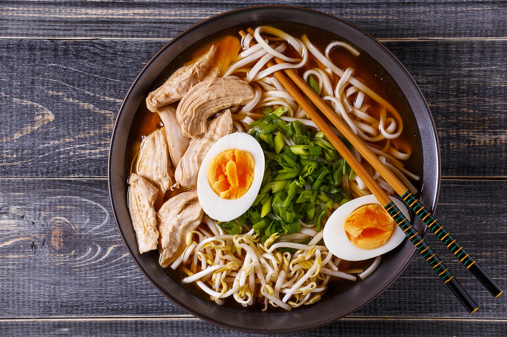

Sushi

Tempura

There are many types of dishes and local specialities you can choose from,
we select 3 best traditional dishes that we highly recommend, they would be the one introduced below.

Sushi is a traditional Japanese dish of prepared vinegared rice, usually with some sugar and salt, accompanied by a variety of ingredients, such as seafood, often raw, and vegetables. Styles of sushi and its presentation vary widely, but the one key ingredient is "sushi rice", also referred to as shari, or sumeshi. Sushi is traditionally made with medium-grain white rice, though it can be prepared with brown rice or short-grain rice. It is very often prepared with seafood, such as squid, eel, yellowtail, salmon, tuna or imitation crab meat. Many types of sushi are vegetarian. It is often served with pickled ginger, wasabi, and soy sauce. Daikon radish or pickled daikon are popular garnishes for the dish. Sushi is sometimes confused with sashimi, a related dish in Japanese cuisine that consists of thinly sliced raw fish or occasionally meat.
Tempura is a typical Japanese dish usually consisting of seafood, meat and vegetables that have been battered and deep fried. The dish was introduced by the Portuguese in Nagasaki through the fritter-cooking techniques in the 16th century. The name "tempura" may originate from the Portuguese Têmporas, which refer to the Ember Days, during which no meat is consumed,or from the Portuguese word tempêro, meaning “seasoning”.A light batter is made of iced water, eggs, and soft wheat flour. Sometimes baking soda or baking powder is added to make the fritter light. Using sparkling water in the place of plain water makes a similar effect. Tempura batter is traditionally mixed in small batches using chopsticks for only a few seconds, leaving lumps in the mixture that, along with the cold batter temperature, result in the unique fluffy and crisp tempura structure when cooked. The batter is often kept cold by adding ice, or by placing the bowl inside a larger bowl with ice in it. Overmixing the batter will result in activation of wheat gluten, which causes the flour mixture to become soft and dough-like when fried.

Ramen is a Japanese noodle soup. It consists of Chinese-style wheat noodles served in a meat or fish-based broth, often flavored with soy sauce or miso, and uses toppings such as sliced pork nori, menma, and scallions. Nearly every region in Japan has its own variation of ramen, such as the tonkotsu ramen of Kyushu, and the miso ramen of Hokkaido. Mazemen is a ramen dish that is not served in a soup, but rather with a sauce. The word ramen is a Japanese borrowing of the Mandarin Chinese lāmiàn. In 1910, the first ramen shop named Rairaiken opened at Asakusa, Tokyo, where the Japanese owner employed 12 Cantonese cooks from Yokohama's Chinatown and served the ramen arranged for Japanese customers. Until the 1950s, ramen was called shina soba. Today chūka soba or just ramen are more common, as the word "支那" has acquired a pejorative connotation.